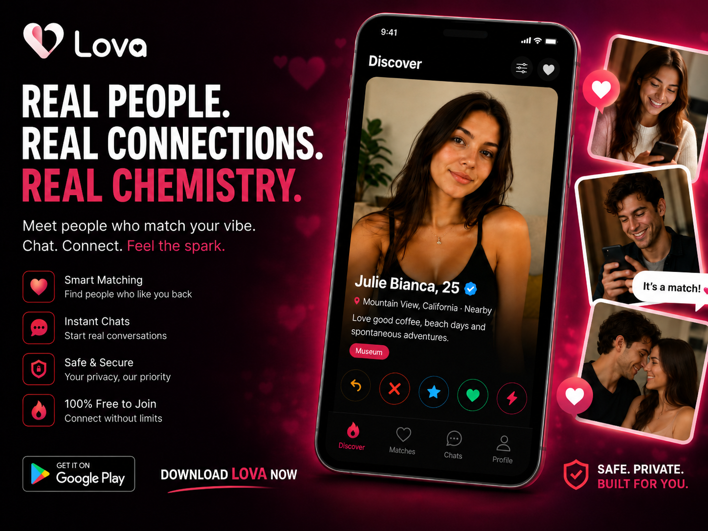

Tu próxima gran historia empieza con un hola.
Swipe. Match. Chat.
Menos scroll.
Más química.
Lova es una app de citas para conversaciones reales, matches rápidos y conexiones simples con personas a tu alrededor.
Android · Para mayores de 18 años
Descubre personas cerca
Explora perfiles cercanos y encuentra solteros con intereses reales.
Desliza y haz match
Si ambos se gustan, el match abre espacio para ligar y conversar.
Chatea naturalmente
Un chat simple para convertir la atracción en una conexión real.
Citas, coqueteo y conexión real
Para quienes ya se cansaron de matches vacíos.
Lova reúne lo que importa en una app de citas moderna: perfiles cerca, swipes rápidos, matches mutuos y chat directo. Para salir, ligar, conocer a alguien nuevo o empezar una buena conversación con más naturalidad.
Personas reales. Conexiones reales.
Una forma directa de conocer a alguien nuevo.
Lova está pensada para un flujo simple: descubre perfiles, conecta por interés real y empieza una conversación sin fricción.
 Disponible en Google Play
Disponible en Google Play

Dentro de Lova
Swipe, match y chat sin fricción.


FAQ
¿Tienes curiosidad?
¿Qué es Lova?
Lova es una app de citas para descubrir personas cerca, hacer match por interés mutuo y empezar una conversación.
¿Cómo funcionan los matches?
Explora perfiles y muestra tu interés. Cuando el interés es mutuo, pueden empezar a conversar.
¿Dónde puedo descargar Lova?
Lova está disponible para Android en Google Play. Usa cualquier botón de descarga de esta página.
¿Para quién es Lova?
Lova está dirigido a personas de 18 años o más.
Descarga y empieza hoy
Conoce personas reales cerca de ti.
Instala Lova y empieza a descubrir perfiles, hacer match y chatear en pocos toques.
Disponible en Google Play